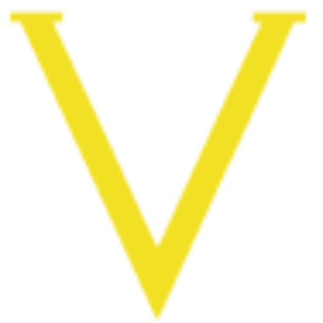
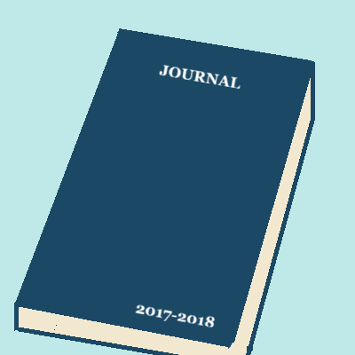

Vrais est un site fait avec l'intelligence artificielle en tant qu'exercice, dans le cadre de ma formation, pour apprendre à l'utiliser. C'est un site qui regroupe les grands esprits qui ont marqué l'histoire. Je me suis rendu compte que l'IA réalisait des sites avec des notions beaucoup plus poussées. Je me suis mis à étudier les notions qu'il utilise pour réaliser un site aussi beau que Vrais.

Site web où je développe des personnages fictifs, leurs objectifs seront réalisés par moi. En tout il y a 4 personnages qui ont des défauts, des qualités, des peurs, des forces et faiblesses. Il est question de surmonter leurs peurs, renforcer leurs faiblesses et surtout trvailler leurs forces.

Il s'agit du premier site web que j'ai publié sur internet. Dans le cadre du programme de CyberCap, j'ai appris à travailler sur mes lacunes en développement web, j'ai donc décidé d'appliquer mes connaissances en créant ce portfolio. Il a pour objectif de présenter mes réalisations en informatique et en mathématique.

Il s'agit du premier projet que j'ai entrepris sur un an. Évidemment comme c'est le premier, il y a des moments ou je n'ai pas écrit. Je compte refaire ce défi pour qu'il y ait moins de jours sautés dans le journal. C'était un simple journal où je notais mes activités, pensées quotidiennes. De temps en temps, je notais des idées de projets que je voulais réaliser. L'objectif premier de ce journal était de réaliser une bande dessinée à la fin de l'année avec le contenu du journal. Au fil du temps, j'ai préféré garder ce contenu pour faire un univers fictif.
